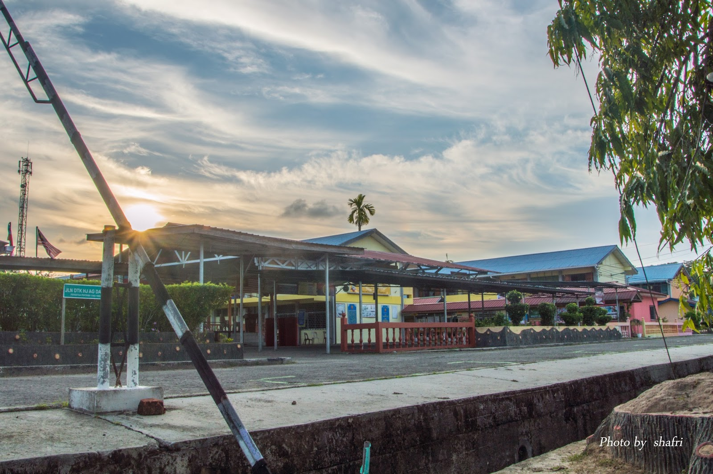

PANTAU KAMERA CCTV SECARA LIVE
BUKA KAMERA
PENGENALAN SEKOLAH
SMK Kuala Penyu merupakan sebuah sekolah menengah tertua yang terdapat di daerah Kuala Penyu, Sabah yang dahulunya ialah sekolah kayu di Pekan Kuala Penyu and dikenali sebagai Gresman Memorial School.
MOTO SEKOLAH:
"Pengetahuan adalah kemajuan"
"Sekolahku menerajui kemajuan"
MAKLUMAT SEKOLAH
Alamat: Peti Surat 207, 89747, Kuala Penyu, Sabah.
No. Tel: 087885851
No. Fax: 087885816
E-mel: XEA6315@moe.edu.my
Visual Attendance Security System (V.A.S.S) merupakan produk yang menggunakan teknologi RFID dan dicipta khusus untuk mengambil kehadiran murid dengan menggunakan kad RFID manakala guru-guru dapat memantau kehadiran murid melalui website yang di sediakan.

KENAPA KAMI MENCIPTAKAN PRODUCT INI?
Kerana kami menyedari bahawa terdapat masalah yang sering dihadapi oleh guru-guru ketika mengambil kehadiran murid secara manual.
Hal ini dikatakan demikian kerana mudah berlakunya kesilapan dan lambat ataupun terlupa untuk merekodkan kehadiran murid-murid.
Selain itu, produk ini juga diciptakan untuk mengurangi kebimbangan ibubapa apabila anak-anak mereka ponteng atau tidak hadir ke sekolah.
Oleh kerana itu, kami memutuskan untuk menciptakan suatu produk yang dapat meringankan beban guru-guru dan kebimbangan ibubapa iaitu V.A.S.S.


KELEBIHAN V.A.S.S:
- Memudahkan guru-guru mengambil kehadiran murid-murid.
- Boleh mengambil kehadiran kokurikulum dan kehadiran sekolah biasa.
- Mengurangkan penggunaan kertas.
- Boleh memantau murid-murid dari jauh (terdapat kamera pada product).
- Tiada lagi berlakunya lupa mengambil kehadiran murid atau hilang kertas rekod.
TONTON TRAILER KAMI DI YOUTUBE
Mainkan Video